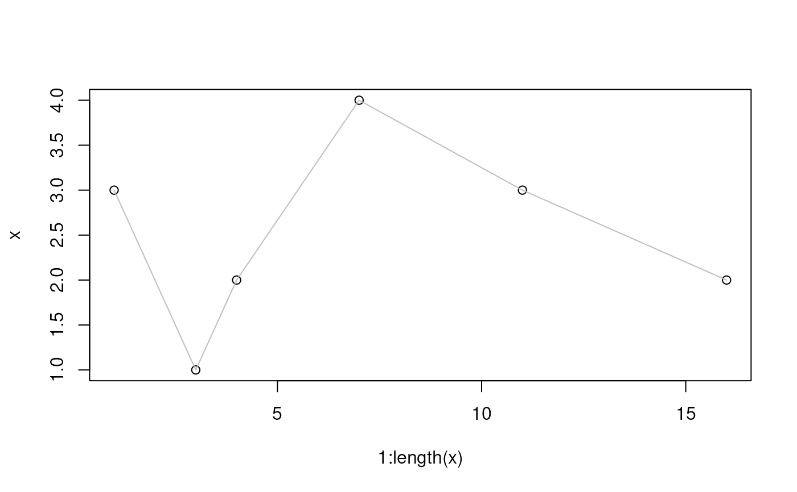
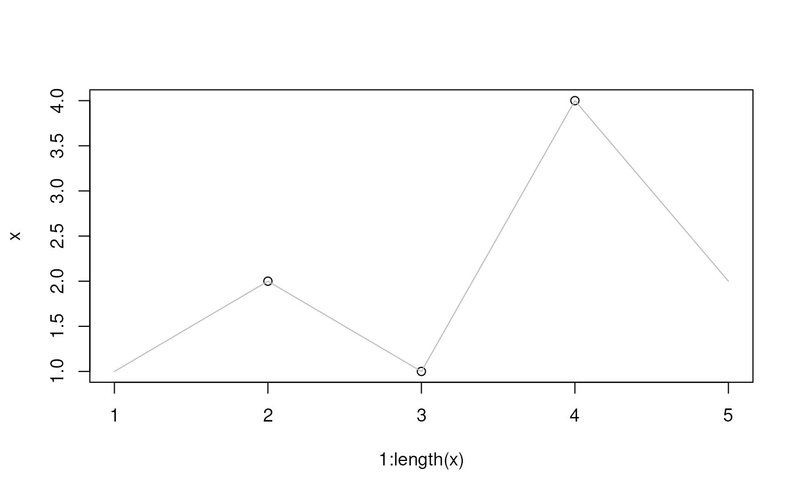
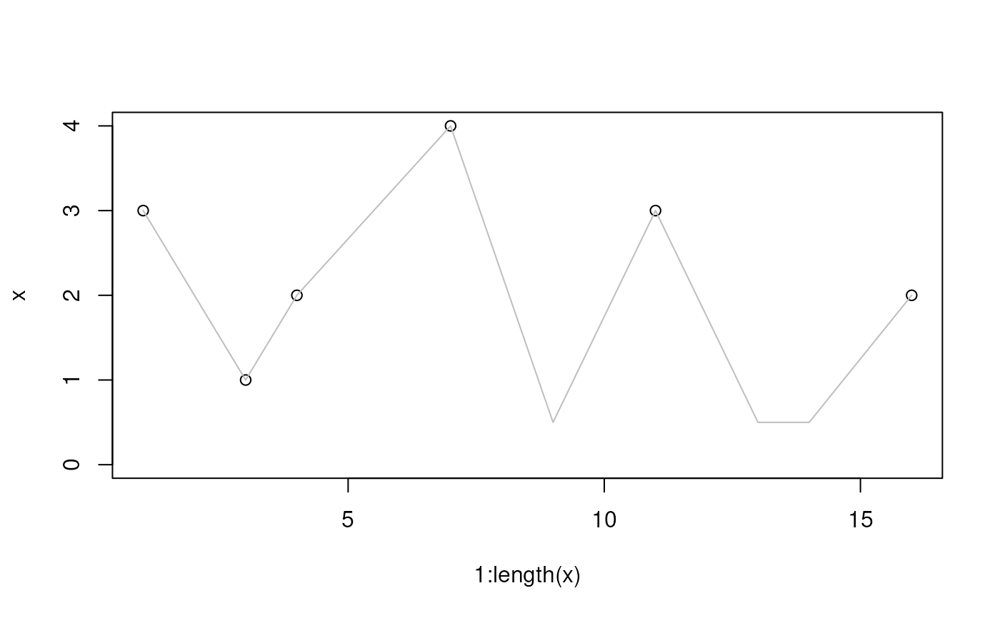
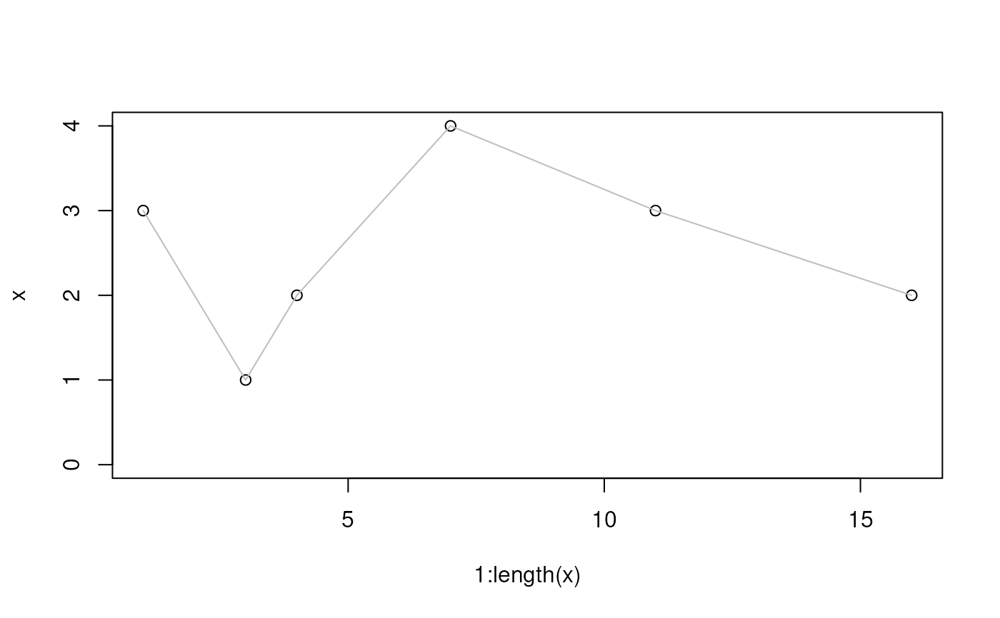

Impute values for empty elements in a vector using linear interpolation
Source:R/functions-binning.R
imputeLinInterpol.RdThis function provides missing value imputation based on linear
interpolation and resembles some of the functionality of the
profBinLin() and profBinLinBase() functions deprecated from
version 1.51 on.
Arguments
- x
A numeric vector with eventual missing (
NA) values.- baseValue
The base value to which empty elements should be set. This is only considered for
method = "linbase"and corresponds to theprofBinLinBase()'sbaselevelargument.- method
One of
"none","lin"or"linbase".- distance
For
method = "linbase": number of non-empty neighboring element of an empty element that should be considered for linear interpolation. See details section for more information.- noInterpolAtEnds
For
method = "lin": Logical indicating whether linear interpolation should also be performed at the ends of the data vector (i.e. if missing values are present at the beginning or the end of the vector).
Details
Values for NAs in input vector x can be imputed using methods
"lin" and "linbase":
`impute = "lin"` uses simple linear imputation to derive a value
for an empty element in input vector `x` from its neighboring
non-empty elements. This method is equivalent to the linear
interpolation in the `profBinLin` method. Whether interpolation is
performed if missing values are present at the beginning and end of
`x` can be set with argument `noInterpolAtEnds`. By default
interpolation is also performed at the ends interpolating from `0`
at the beginning and towards `0` at the end. For
`noInterpolAtEnds = TRUE` no interpolation is performed at both
ends replacing the missing values at the beginning and/or the end of
`x` with `0`.
`impute = "linbase"` uses linear interpolation to impute values for
empty elements within a user-definable proximity to non-empty elements
and setting the element's value to the `baseValue` otherwise. The
default for the `baseValue` is half of the smallest value in
`x` (`NA`s being removed). Whether linear interpolation based
imputation is performed for a missing value depends on the
`distance` argument. Interpolation is only performed if one of the
next `distance` closest neighbors to the current empty element has
a value other than `NA`. No interpolation takes place for
`distance = 0`, while `distance = 1` means that the value for
an empty element is interpolated from directly adjacent non-empty
elements while, if the next neighbors of the current empty element are
also `NA`, it's vale is set to `baseValue`.
This corresponds to the linear interpolation performed by the
`profBinLinBase` method. For more details see examples below.Examples
#######
## Impute missing values by linearly interpolating from neighboring
## non-empty elements
x <- c(3, NA, 1, 2, NA, NA, 4, NA, NA, NA, 3, NA, NA, NA, NA, 2)
imputeLinInterpol(x, method = "lin")
#> [1] 3.000000 2.000000 1.000000 2.000000 2.666667 3.333333 4.000000 3.750000
#> [9] 3.500000 3.250000 3.000000 2.800000 2.600000 2.400000 2.200000 2.000000
## visualize the interpolation:
plot(x = 1:length(x), y = x)
points(x = 1:length(x), y = imputeLinInterpol(x, method = "lin"), type = "l", col = "grey")

## If the first or last elements are NA, interpolation is performed from 0
## to the first non-empty element.
x <- c(NA, 2, 1, 4, NA)
imputeLinInterpol(x, method = "lin")
#> [1] 1 2 1 4 2
## visualize the interpolation:
plot(x = 1:length(x), y = x)
points(x = 1:length(x), y = imputeLinInterpol(x, method = "lin"), type = "l", col = "grey")

## If noInterpolAtEnds is TRUE no interpolation is performed at both ends
imputeLinInterpol(x, method = "lin", noInterpolAtEnds = TRUE)
#> [1] 0 2 1 4 0
######
## method = "linbase"
## "linbase" performs imputation by interpolation for empty elements based on
## 'distance' adjacent non-empty elements, setting all remaining empty elements
## to the baseValue
x <- c(3, NA, 1, 2, NA, NA, 4, NA, NA, NA, 3, NA, NA, NA, NA, 2)
## Setting distance = 0 skips imputation by linear interpolation
imputeLinInterpol(x, method = "linbase", distance = 0)
#> [1] 3.0 0.5 1.0 2.0 0.5 0.5 4.0 0.5 0.5 0.5 3.0 0.5 0.5 0.5 0.5 2.0
## With distance = 1 for all empty elements next to a non-empty element the value
## is imputed by linear interpolation.
xInt <- imputeLinInterpol(x, method = "linbase", distance = 1L)
xInt
#> [1] 3.000000 2.000000 1.000000 2.000000 2.666667 3.333333 4.000000 2.250000
#> [9] 0.500000 1.750000 3.000000 1.750000 0.500000 0.500000 1.250000 2.000000
plot(x = 1:length(x), y = x, ylim = c(0, max(x, na.rm = TRUE)))
points(x = 1:length(x), y = xInt, type = "l", col = "grey")

## Setting distance = 2L would cause that for all empty elements for which the
## distance to the next non-empty element is <= 2 the value is imputed by
## linear interpolation:
xInt <- imputeLinInterpol(x, method = "linbase", distance = 2L)
xInt
#> [1] 3.000000 2.000000 1.000000 2.000000 2.666667 3.333333 4.000000 3.750000
#> [9] 3.500000 3.250000 3.000000 2.800000 2.600000 2.400000 2.200000 2.000000
plot(x = 1:length(x), y = x, ylim = c(0, max(x, na.rm = TRUE)))
points(x = 1:length(x), y = xInt, type = "l", col = "grey")
